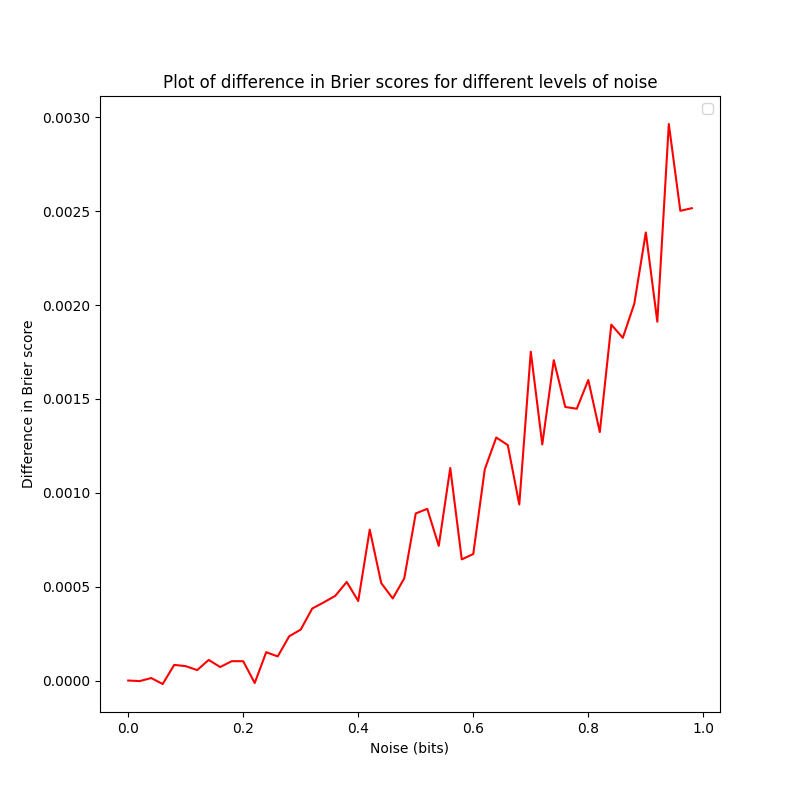

author: niplav, created: 2022-02-04, modified: 2023-06-12, language: english, status: notes, importance: 4, confidence: likely
I discuss proposals for a function that estimates how much predictive information additional degrees of precision in forecasts add and at which point additional precision is just noise, and investigate these proposals with empirical forecasting data. I furthermore describe desirable criteria such functions ought to fulfill.
epistemic status: likely not just reinventing the wheel, but the whole bicycle
Say we have a set of resolved forecasts and can display them on a calibration plot.
We can grade the forecasts according to some proper scoring rule, e.g. the Brier score or the logarithmic scoring rule.
But we can also ask the question: how fine-grained are the predictions of our forecaster? I.e., at which level of precision can we assume that the additional information is just noise?
Take, for example, a hypothetical forecaster Omar who always gives their forecasts with 5 decimal digits of precision, such as forecasting a "24.566% probability of North Korea testing an ICBM in the year 2022", even though if we look at their calibration plot (of sufficiently many forecasts), we see that they are pretty much random in any given interval of length 0.1 (i.e., their forecast with 15% and a forecast of 5% can be expected to resolve to the same outcome with equal probability). This means that 4 of the 5 decimal digits of precision are likely just noise!
Omar would be behaving absurdly; misleading their audience into believing they had spent much more time on their forecasts than they actually had (or, more likely, into correctly leading the audience into believing that there was something epistemically sketchy going on).
I believe something similar is going on when people encounter others putting probabilities on claims: It appears like an attempt at claiming undue quantitativeness (quantitativity?) in their reasoning, and at making the listener fall prey to precision bias, as well as an implicit claim at scientific rigour. However, not all precision in prediction is false precision: At some point, if remove digits of precision, the forecasts will become worse in expectation.
But how might we confront our forecaster Omar from above? How might we estimate the level of degrees of precision after which their forecasts gave no more additional information?
Ideally we'd want to find a number that tells us, for a given set of prediction, the precision that those predictions display: Any additional digits added to the probability beyond this precision would just be noise.
Let us call this number the precision $ᚠ$ of a set of forecasts.
Let $\mathbf{D}=((f_1, o_1), \dots, (f_n, o_n)) \in ((0,1),\{0,1\})^n$
be a dataset of $n$ forecasts $f_i$ and resolutions $o_i$.
Then $ᚠ$ is simply a function that takes in such a dataset of
forecasts and produces a real number $ᚠ: ((0;1),\{0,1\})^n \rightarrow
\mathbb{R}$, so for example $ᚠ(D)=0.8$ for the forecasts and outcomes
$D$ of some forecaster, or team of forecasters.
It is natural to assume that $ᚠ$ returns a probability:
after all, the input dataset has probabilities, and
when talking about Omar's calibration
plot
I was explicitely calling out the loss of accuracy in probability
intervals shorter than 0.1.
Furthermore, Tetlock et al. also talk about precision in terms of probabilities, we are all used to probabilities, probabilities are friends.
But this doesn't stand up to scrutiny: If we accept this, assuming we use probability buckets of size 5%, then 99.99999% and 96% are as similar to each other as 51% and 54.99999%. But the readers familiar with the formulation of probability in log-odds form surely balk at this equivalence: 99.99999% is a beast of a probability, an invocation only uttered in situations of extreme certainty, while 96%, 51% and 54.99999% (modulo false precision) are everyday probabilities, plebeian even.
However, in terms of precision, 54.99999% stands out like a sore thumb: while 99.99999% is supremely confident, it is not overprecise, since rounding up to 100% would be foolish; but with 54.99999%, there is no good reason we can't just round to 55%.
So precision should be calculated in log-odds space, where one moves in bits instead of probabilities. Since we want to make a statement how much we can move the probabilities around until the proper scoring rule we apply starts giving worse results, it is only natural to express the precision in bits as well. (Which can't be converted linearly into probabilities: moving from 50% to 75% is one bit, but similarly moving from ~99.954% to ~99.977% is also a change of one bit).
The assumption of expressing precision in bits naturally leads to an algorithm:
$D$ into log-odds.$ⴟ(θ)$ for some parameters $θ$ to those forecasts.$D$ receive worse scores, change $θ$ and go back to step 1.$ⴟ(θ)$ into an estimate of precision and return it.This has some free parameters (Which noise function $ⴟ(θ)$
exactly does one use? How does one change $θ$ at the end of each
iteration?) and is potentially quite resource intensive (potentially
requiring many samples to find the correct $θ$).
Uniform noise (in both directions) is easiest to interpret: The "width" of the noise is then the precision that is being investigated.
So one can first define some helper functions
import csv
import statistics
import numpy as np
def mse(o,p):
return np.mean(np.abs(o-p)**2)
def logit(p):
return np.log(p/(1-p))
def logistic(p):
return 1/(1+np.exp(-p))
and then a simple function that
def perturbed_score_difference(forecasts, perturbation=1, samples=1000):
o=forecasts[0]
p=forecasts[1]
score=mse(o,p)
pert_scores=[]
for i in range(0,samples):
perturbed=logistic(logit(p)+np.random.default_rng().uniform(-perturbation/2,perturbation/2,len(p)))
pert_scores.append(mse(o,perturbed))
return np.mean(pert_scores)-score
One could then simply sample the precisions and estimate the elbow
point with a threshold
value (why doesn't range allow floating point values as parameters?):
def score_differences(forecasts, samples=100, low=0, high=100, div=100):
return np.array([[s/div, perturbed_score_difference(d1, perturbation=s/div, samples=samples)] for s in range(low,high)]).T
We can now define a toy dataset to visualize the differences in Brier score of the perturbed data and the unperturbed data:
d1=np.array([[1,0.8],[0,0.4],[0,0.65],[1,0.99]]).T
oc=d1[0]
pr=d1[1]
d2=np.array([[1,0.8],[0,0.4],[0,0.65],[1,0.9]]).T
oc2=d1[0]
pr2=d1[1]
d3=np.array([[0,0.8],[1,0.4],[1,0.65],[0,0.9]]).T
oc3=d1[0]
pr3=d1[1]
Then we can set
differences1=score_differences(d1, samples=5000, low=0, high=50, div=50)
differences2=score_differences(d1, samples=5000, low=0, high=50, div=50)
differences3=score_differences(d1, samples=5000, low=0, high=50, div=50)
and plot the result:

One can now eyeball this plot and try to determine the point where the difference in Brier score starts diverging from 0, which I would put at around 0.25 bits.
Use precision $ᚠ$ and noise $ⴟ$.
$n=0$, $s(\emptyset, \mathcal{F})$ is undefined.$n=1$, $s(\mathbf{D}, \mathcal{F})=0$: We are generally suspicious of any single forecast.
$\mathbf{D}$ contains an $f_i$ so that there is no other prediction with a probability within $[f_i-\frac{\mathcal{F}}{2}; f_i+\frac{\mathcal{F}}{2}]$, then $s(\mathbf{D}, \mathcal{F})=0$. Yes, even if the set of forecasts is "dense" and non-random in other places.$n=2$, then it should hold for an $ε>0$ (but close to 0): $s(((ε, 0), (1-ε, 1)), 1)=1$, and $s(((ε, 0), (1-ε, 1)), 0.5)=0$.
$n \rightarrow \infty$, and a sufficiently small $\frac{1}{n}>ε>0$, it should hold that $s(((ε,0),(2ε,0), \dots, (\lfloor \frac{n}{2} \rfloor ε, 0), (\lceil \frac{n}{2} \rceil ε, 1), \dots, (nε, 1)), \mathcal{F})$ is $1$ for $\mathcal{F}=1$ and $0$ for $\mathcal{F} \le 0.5$.$n \rightarrow \infty$, and a sufficiently small $\frac{1}{n}>ε>0$, and $r(p)$ being 1 with probability $p$ and 0 with probability $1-p$, it should hold that $s(((ε,r(ε)),(2ε,r(2ε)), \dots, (\lfloor \frac{n}{2} \rfloor ε, r(\lfloor \frac{n}{2} \rfloor ε)), (\lceil \frac{n}{2} \rceil ε, r(\lceil \frac{n}{2} \rceil ε)), \dots, (nε, r(nε))), \mathcal{F})=1$ for any $\mathcal{F}$: If we have lots of datapoints, all perfectly calibrated, the score is nearly 0 at all precisions.$o_i$ uniformly from $\{0, 1\}$ with replacement, $s(\mathbf{D}, \mathcal{F})=0$.$\mathcal{F}_1<\mathcal{F}_2$, $s(\mathbf{D}, \mathcal{F}_1) \le s(\mathbf{D}, \mathcal{F}_2)$ (smaller precision shouldn't lead to a greater score, since if you're uncalibrated at a precision of 10%, you're not going to be suddenly calibrated at a precision of 5%)
But what should be done about a calibration plot that looks like this?
There are two ways of arguing what, morally, the precision of the forecasts is:
$~1$ for every precision (assuming a large $n$) is that inferring the correct way to make forecasts from this calibration plot is trivial: With forecasts of probability $f_i>0.5$, re-assign a probability $f_i:=1-f_i$.$~1$ is that extending this rule would mean that at every kind of correction on the plot is valid, but there is no clear cutoff point that prevents us from applying this to individual predictions ("If you predict 99% instead of 43%, and 1% instead of 13%, and 1% instead of 23%, and […], then you achieve perfect resolution and calibration.")n forecasts and their resolutionsoutputoutput$\ge \mathcal{F}$